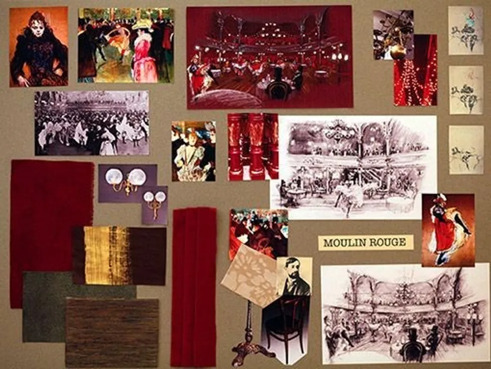

What is a Mood Board?
A mood board is a type of visual presentation or 'collage' consisting of images, text, and samples of objects in a composition. It can be based on a set topic or can be any material chosen at random. A mood board can be used to convey a general idea or feeling about a particular topic. They may be physical or digital, and can be effective presentation tools.
Uses for Mood Board
- Graphic designers, interior designers, industrial designers, photographers, user interface designers and other creative artists use mood boards to visually illustrate the style they wish to pursue. Amateur and professional designers alike may use them as an aid for more subjective purposes such as how they want to decorate their bedroom, or the vibe they want to convey through their fashion.
- Mood boards can also be used by authors to visually explain a certain style of writing, or an imaginary setting for a story line. In short, mood boards are not limited to interior decorating purposes, but serve as a visual tool to quickly inform others of the overall "feel" (or "flow") of an idea. In creative processes, mood boards can balance coordination and creative freedom.
- Mood boards can be used in marketing for advertisements and branding. They are used to help creative teams stay on the same page while also adhering to the image that the brand wants to project outward.[3] They can also be helpful for sticking to a specific creative concept when creating a series of ads.
